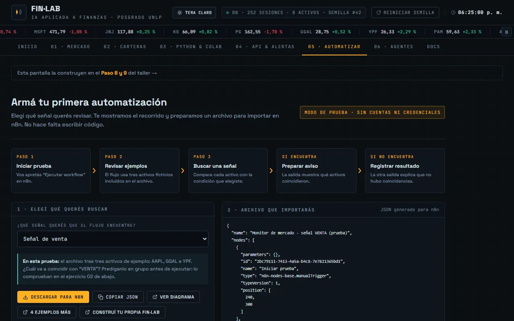

PASO 9 · CIERRE DEL TALLER
La terminal terminada: 127.0.0.1:4173/#/guiado
Abren la terminal completa en la pestaña 05 · AUTOMATIZAR, prueban su automatización en n8n y la comparan con la suya.
Una idea nueva: Una automatización es un mapa: dato, condición, aviso. Ejemplo: API de precios → ¿RSI menor a 30? → correo.
Qué van a lograr
Ver en el navegador la pantalla “Armá tu primera automatización”, descargar el workflow que genera, ejecutarlo en n8n y resolver los tres ejercicios en grupo del final de la página hasta que el contador diga 3/3 RESUELTOS.
Armá tu primera automatización MODO DE PRUEBA · SIN CUENTAS
1 · Iniciar prueba2 · Revisar ejemplos3 · Buscar una señalSi encuentraSi no encuentra
¿Qué señal querés que el flujo encuentre? Señal de venta ▾
DESCARGAR PARA N8NCOPIAR JSONVER DIAGRAMA
Más abajo: Pónganlo a prueba en equipo · 15 MIN · 0/3 RESUELTOS
Así va quedando
- Esqueleto (ya está)
- Datos (ya está)
- Mercado (ya está)
- Indicadores (ya está)
- Carteras (ya está)
- API (ya está)
- Colab (ya está)
- n8n (ya está)
- #/guiado (este paso)
- Clave (todavía no)
- Modelo (todavía no)
- Agente (todavía no)
- Consejo (todavía no)
- MCP (todavía no)


Qué hacer, clic por clic
A · Abrir la terminal
- Abran en el navegador https://postgrado-ia.vercel.app/#/guiado y toquen la pestaña 05 · AUTOMATIZAR. Sin internet, pídanle al docente la versión local.
B · Recorrer la automatización guiada
- Lean los cinco pasos dibujados arriba (Iniciar prueba → … → Registrar resultado): es el flujo del paso 8, simplificado.
- En “1 · Elegí qué querés buscar” seleccionen Señal de venta y predigan en grupo qué activo va a aparecer.
- Toquen “DESCARGAR PARA N8N”, impórtenlo en n8n (Create workflow → ⋯ → Import from File…) y toquen Execute workflow.
- Miren cuál salida se puso verde después de ¿Hay una señal?. ¿Coincide con lo que predijeron?
- Repitan con Señal de compra y Señal neutral.
C · Los ejercicios en grupo
- Bajen hasta “Pónganlo a prueba en equipo” y asignen los cuatro roles (piloto, redactor, auditor, presentador).
- En cada ejercicio, cada integrante justifica en una frase por qué elegiría su opción; recién después toquen COMPROBAR.
- El contador de arriba a la derecha tiene que llegar a 3/3 RESUELTOS.
Cómo comprobar
- La dirección del navegador termina en /#/guiado (o tocaron la pestaña 05 · AUTOMATIZAR) y esa pestaña está marcada.
- En n8n, la salida que se activa coincide con la predicción que anotaron, o pueden explicar por qué no.
- El contador de ejercicios dice 3/3.
- Cada grupo presenta un hallazgo de la auditoría que confirmó a mano y uno que la IA reportó y resultó falso.
Pregunta de cierre del taller: ¿en qué paso la IA se equivocó más y cómo lo detectaron? Esa respuesta es el aprendizaje más importante: la IA escribe rápido, pero la verificación sigue siendo trabajo de ustedes.
Parte B · El prompt de cierre: auditoría cruzada
Parte B · 20 minutos. Si la clase no da para más, háganla al comienzo de la clase siguiente: solo necesitan su finlab.html y un chat nuevo.
Cada grupo le pasa su finlab.html a otro. El grupo que lo recibe usa este prompt en un chat nuevo (la IA que escribió el código no debería corregirse a sí misma) y después verifica a mano dos de los hallazgos.
PROMPT · AUDITORÍA
Chat nuevo, archivo de otro grupo.
Sos auditor de una herramienta educativa de análisis financiero. Te paso un archivo HTML completo. Revisá solamente: 1. Fórmulas: SMA, EMA, RSI de Wilder, retorno y volatilidad anualizados, Sharpe con tasa libre de riesgo 4,3%. ¿Están bien implementadas? 2. Consistencia: ¿la tabla, el gráfico y la API muestran los mismos números? 3. Comunicación: ¿en algún lugar se presentan los datos como reales o se sugiere una recomendación de inversión? Para cada hallazgo indicá: dónde está (nombre de la función o sección), qué está mal, cómo lo verificaría una persona sin programar y la corrección. Si no encontrás problemas en un punto, decilo; no inventes hallazgos. [pegar el archivo]
Si algo falla
- La página abre en INICIO o en otra pestaña: toquen la pestaña 05 · AUTOMATIZAR o agreguen #/guiado al final de la dirección.
- No abre o no hay internet: pídanle al docente la versión local.